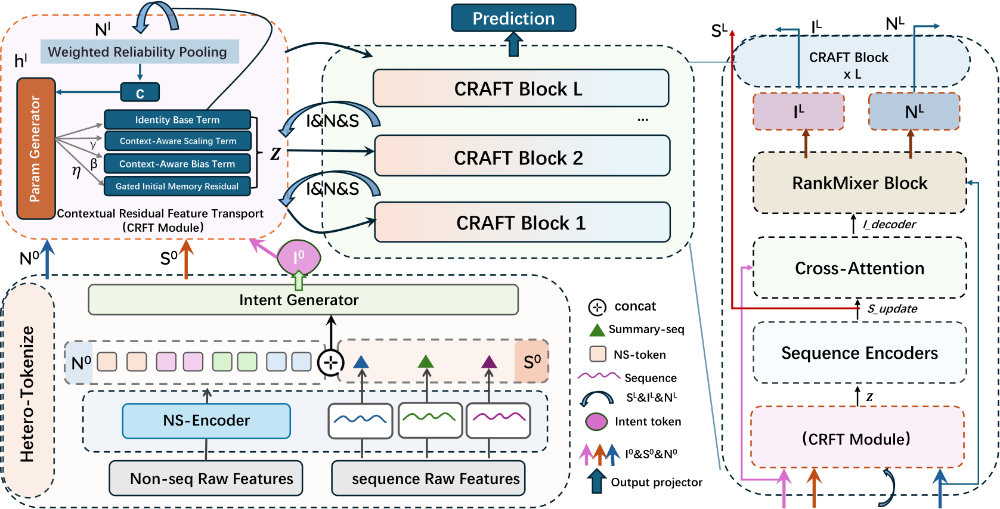
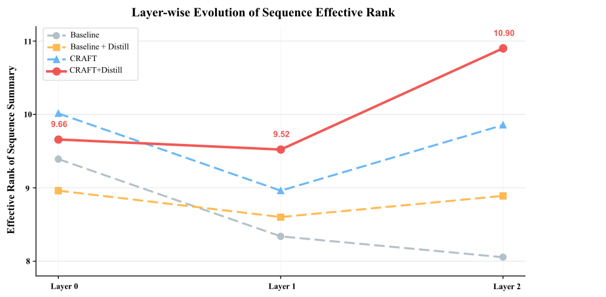

我的判断：值得做排序模型的同行花二十分钟读，但读的重点不是那个架构收益，而是它对“统一模型越堆越深、为什么不一定越好”的解释，以及附录里很实在的特征工程经验。它是 KDD Cup 2026 腾讯 UniRec 赛题（TAAC2026 广告转化预估）的参赛论文，来自天津大学。核心思想一句话：先把用户、物品、上下文这些非序列特征按可靠程度加权汇总成一个上下文向量，再用这个向量在每一层给意图 token 和序列 token 生成缩放、偏置和“回到初始状态”的门，让非序列特征从被混合的对象变成调节者。数字要分开看：CRAFT（作者提出的块，Contextual Residual Adaptive Feature Transport）把强基线的测试 AUC 从 0.837165 提到 0.837231，只多 0.000066；蒸馏把同一个基线提到 0.837983，多了 12 倍还不止；两者叠加的 0.838090 超过了赛前榜单最好成绩 0.83798。
它到底在解决什么问题？
先看一个示意场景。广告转化预估里，TAAC2026 的一条样本有用户侧和物品侧的稀疏 ID 字段、稠密向量字段、请求时间，再加上多个业务域的行为序列。现在流行的统一模型（OneTrans、HyFormer 一类）把这些都变成 token，在每一层里用 attention 或 MLP 混合。HyFormer 的做法是：从非序列特征生成几个全局 query token，让 query 去读长序列，再把 query 和非序列 token 一起做 token 混合。
问题出在“一起混合”。假设某个稠密字段在 90% 的样本上是全零补位（示意），它在每层都和别的 token 一样参与混合：
| 示意样本 | 字段 A（可靠） | 字段 B（大量缺失） | 混合后 query 的主要变化方向 |
|---|---|---|---|
| 用户 1 | 爱买运动鞋 | 全零 | 被 B 拉向同一个方向 |
| 用户 2 | 爱买母婴用品 | 全零 | 同上 |
| 用户 3 | 爱买数码 | 全零 | 同上 |
三个兴趣完全不同的用户，query 却被同一个“缺失”信号往同一处推。层数越多，推得越多，query 的多样性越低，序列里的证据也被稀释。作者引用 TokenFormer 的观察：坍缩的非序列字段会拖坏序列表征。作者的论点是，统一模型的瓶颈不在“能不能交互”，而在信息一层层往上传时有没有被覆盖、压缩或带偏，他们把这件事叫 feature transport（特征传输）。
这个说法借了 flow 模型的直觉：把每一层看成表征的一步“位移”，模型要学的是每一步往哪走、走多远，同时别忘了出发点。但它只借了这个直觉，没有引入生成模型那套求解器或专门的训练目标，训练用的还是普通的二分类交叉熵。
先看全景

一个 CRAFT 块里依次发生这些事：
| 步骤 | 输入 | 做什么 | 输出 |
|---|---|---|---|
| 0. 分词（只做一次） | 原始特征 | 稀疏 ID 字段先各自查 embedding，再用 RankMixer 式分词器压成固定数目的 token（RankMixer 的做法是把字段 embedding 拼起来再切成固定段数、每段投影成一个 token，论文沿用这一做法，没写具体分组）；稠密向量按结构分别处理；每组序列池化成摘要，拼上非序列 token 经 MLP 生成该组的意图 token | N⁰、S⁰、I⁰ |
| 1. 上下文汇总 | 非序列 token N | 可靠性打分后 softmax 加权求和 | 上下文向量 c |
| 2. 上下文残差传输 | c、意图 I、序列 S | 由 c 生成 γ、β、η，按下面的公式更新 I 和 S | 调节后的 Ĩ、S̃ |
| 3. 桥接交换 | Ĩ、N、S̃ | 序列编码器精修序列；意图对序列做 cross-attention；意图和非序列 token 一起过 RankMixer 混合层（T 个 token 各切成 T 段，第 h 个新 token 由所有 token 的第 h 段拼成，再各自过一个独立 FFN） | 下一层的 I、N、S |
| 预测 | 最后一层所有意图 token | 拼接、投影、MLP | 转化概率 |
意图 token 是论文的叫法：每组行为序列配 2 个、按样本生成的小向量，负责在非序列上下文和行为证据之间来回搬信息，最后也只有它们进入预测头。和 HyFormer 式基线相比，第 3 步基本照旧，非序列 token 仍会在 RankMixer 里和意图 token 混合；新增的是第 1、2 步：在混合之前，非序列特征先当“调节者”，决定意图和序列表征这一层怎么变。下面拆开讲这两步。
拆开看：上下文向量和残差传输
为什么要按可靠性加权，而不是直接平均？ 平均池化会让那个大量缺失的字段 B 和可靠的字段 A 有一样的话语权。CRAFT 给每个非序列 token 配一个小打分网络 r，对分数做 softmax 当权重：
手算一个示意例子：三个字段打分 2、1、−1。e² ≈ 7.39、e¹ ≈ 2.72、e⁻¹ ≈ 0.37，归一化后权重约 0.71、0.26、0.04。也就是说，打分最低的那个字段只贡献约 4%，它即使是一堆补位的零，也很难再把 c 带偏。打分网络没有额外的监督，权重完全由转化标签的梯度学出来。
残差传输具体怎么改表征？ 对意图 token 或序列 token Z（两者各有一套参数），CRAFT 这样更新：
γ、β、η 都由上下文向量 c 经一个小网络生成，每层不同、每个样本不同。前两项是熟悉的 FiLM 式调节：γ 按上下文缩放当前表征，β 按上下文平移。第三项是这篇的特色，η 是一个门，控制把表征往第 0 层的初始状态拉回多少。
再手算一维的示意例子：当前值 Z=2，初始值 Z⁰=1，归一化后 RMSNorm(Z)=1；上下文给出 γ=0.1、β=0.05、η=0.2。代入得 2 + 0.1 + 0.05 + 0.2×(1−2) = 1.95。前两项把它往外推了 0.15，记忆门又把它往初始值拉回 0.2。为什么需要这一项？层数一多，早期的意图信息容易被一层层的混合冲掉，η 给了模型一条“按需找回出发点”的通路，而且找回多少由当前样本的上下文决定。
桥接交换为什么每层都做？ 传统做法是序列模块和特征交互模块各算各的，最后拼一下（晚期融合）。CRAFT 每一层都让意图读一次序列、再和非序列 token 混一次，序列证据、意图和上下文在每层都重新对齐一次。这部分沿用 HyFormer 式做法，不是新东西。
这套方案真的更好吗？
所有实验都在 TAAC2026 上，指标是官方测试集 AUC。对比对象有三个：赛方的原始基线；作者自己调好的“优化基线”，即 HyFormer 式统一模型，加上结构感知分词、稳定的优化器设置和 EMA（参数滑动平均）；以及这个优化基线加上两代蒸馏的版本。蒸馏分三段：先不用蒸馏训一个监督模型当锚点；第一代学生从随机初始化开始，以锚点为老师，损失里软标签权重 0.5；第二代学生同样从头训，以第一代学生为老师，权重 0.65。表中带“蒸馏”的结果用的是 0.65 这一档，对应第二代。CRAFT 用隐藏维 420、embedding 维 64、4 个注意力头，蒸馏温度 1.0、权重 0.65。
| 模型 | 测试 AUC | 比原始基线高（AUC 差 ×1000） | 推理参数 | 每样本 GFLOPs |
|---|---|---|---|---|
| 原始基线 | 0.832688 | – | 182.21M | – |
| 优化基线 | 0.837165 | +4.48 | 307.27M | 6.955 |
| 优化基线 + 蒸馏 | 0.837983 | +5.30 | 334.87M | 9.889 |
| CRAFT | 0.837231 | +4.54 | 308.69M | 6.970 |
| CRAFT + 蒸馏 | 0.838090 | +5.40 | 308.69M | 6.970 |
把数字拆成三段增量，结论就清楚了。从原始基线到优化基线，分词和训练调优让 AUC 提高约 0.0045，是大头。在优化基线上换成 CRAFT，只多 0.00007。蒸馏单独带来约 0.0008，比 CRAFT 架构本身大一个数量级。两者叠加时，CRAFT + 蒸馏比优化基线 + 蒸馏多约 0.0001，参数还少 26M。这说明 CRAFT 和蒸馏的收益没有互相抵消，但这篇论文里真正拉开差距的是特征处理和训练方法，架构那一块只是最后一小步。
作者还给了表征诊断，用的是有效秩（effective rank）：把一批样本的表征做奇异值分解，看能量分散在多少个独立方向上，数值越大说明表征越不“挤在一起”。CRAFT 把意图 token 的有效秩从 74.02 提到 77.22，序列摘要从 8.06 提到 9.86。一个有意思的对照是：只加蒸馏时，基线 AUC 涨了，意图 token 的有效秩反而从 74.02 掉到 57.68；CRAFT + 蒸馏则同时拿到最高 AUC 和最高的意图有效秩 84.33。这说明蒸馏改善的是监督信号，CRAFT 改变的是中间表征的保留方式，两者作用在不同地方。

这张图是论文“传输瓶颈”说法最直接的证据：纯交互的基线每多一层，序列表征就更挤一点；有了上下文残差和记忆门，后面的层能把丢掉的方向找回来。要注意作者自己的提醒，有效秩只是几何上的诊断，不直接等于表征质量。
扩展实验里，加深和加宽都有正收益（以下都带蒸馏）：
| 配置 | 块数 | 隐藏维 | 测试 AUC | 每样本 GFLOPs |
|---|---|---|---|---|
| CRAFT-1L | 1 | 420 | 0.837975 | 3.960 |
| CRAFT-2L | 2 | 420 | 0.838090 | 6.970 |
| CRAFT-4L | 4 | 420 | 0.838093 | 12.992 |
| CRAFT-6L | 6 | 420 | 0.838148 | 19.013 |
| CRAFT-D600 | 2 | 600 | 0.838106 | 13.679 |
从 1 块加到 6 块，算力涨到约 4.8 倍，AUC 只多约 0.00017，说明加深的回报很快变薄。最明显的是 2 块到 4 块：算力几乎翻倍，AUC 基本没动。算力相近时，加宽的 D600 比 4 块略好一点。我的解读是：在这个数据上，第二个块很有用，之后的收益已经很平，扩展曲线不能当成稳定的规律。作者另一张图显示，从 1 块到 6 块，意图 token 的有效秩翻了一倍多（70.4 到 158.2），作者称为“最终输出”的表征（按上下文应是送进预测头之前的那个向量，论文没写清具体形状）有效秩反而下降（36.6 到 27.7）。这意味着新增的层主要扩大了意图 token 这条“中转通道”的容量，而不是把所有表征都撑大。
附录里更值得带走的东西
这篇论文篇幅一半在附录，里面的工程经验对做 CTR/CVR 的团队反而更直接。
稠密向量不要一律压平投影。作者把匿名的稠密字段按观察到的结构分成几类：普通连续向量用 BatchNorm 加 MLP；由重复子向量组成、且常有全零段的，逐段投影后带掩码池化，免得全零段扭曲归一化；前缀是稳定 embedding、后缀是分布不稳的元数据的，只用前缀；和 ID 数组逐位对齐的“ID-数值对”（同一位置上的数值只有配着那个 ID 才有意义），用配对编码器：同时输入该位置的 ID embedding 和数值投影，再加上两者的逐元素乘积和差，最后带掩码聚合，无效的配对位置不参与。作者的解释是：把重复段、元数据后缀和稳定前缀混在一起做通用投影，模型容易学到不稳定的捷径，模型越大越会放大这些捷径，所以加深加宽时收益会变差。论文没有给这一条单独的 AUC 对比，只在负面结果表里列为“泛化变差、鲁棒性降低”。
缺失和补位要显式建模。单值 ID 缺失给一个保留的 embedding，让“缺失”本身成为可学习的类别；多值 ID 和行为序列用掩码，补位不能进入池化和注意力；NaN、无穷值先清洗。作者把这和表征坍缩联系起来：如果把缺失当普通取值，模型会学到很多样本共享的低多样性方向，再经统一块扩散出去，这正是开头那个示意场景。
稀疏参数和稠密参数用不同的优化器。稀疏 embedding 用 Adagrad，因为不同 ID 的梯度频率差别很大；稠密参数用论文称为“MuonPlus/AdamW 式”的更新（Muon 是一种对矩阵参数的更新做正交化的优化器，论文没说明两者如何搭配，只在负面结果里写了“所有参数共用一个优化器会更不稳定”）；训练刚开始时刷新一次不可靠的稀疏 embedding，免得早期的噪声状态一路传下去（论文没写怎么判定“不可靠”、具体在第几步触发）；用验证集早停，因为过了早期最好点继续训会过拟合。作者还列了几条没用的尝试：更重的自注意力稠密分词器成本高、还不稳定，加大 FFN 倍数收益有限甚至为负。
我认为它的局限
第一，架构本身的收益太小，又没有方差。不加蒸馏时 CRAFT 只比优化基线高 0.000066 AUC，论文没有报多次运行的标准差或置信区间。比赛数据上换个随机种子，这个量级的差距很可能就翻过来了，单凭这一组数字不能断定 CRAFT 有效。
第二，只有一个比赛数据集，没有线上实验，也没有和 OneTrans、HyFormer 原版在同一设置下的对照，只和作者自己的优化基线比。加上有效秩和聚类互信息（对每种中间表征做 K=128 的 KMeans 聚类，再算聚类编号和转化标签之间的互信息，看哪种表征里装着更多能区分标签的信息）这些诊断都是作者自己做的，“传输瓶颈”的说法目前是一个合理的解释，还算不上被证实。
第三，有几处数字口径不清。优化基线 + 蒸馏的推理参数是 334.87M、9.889 GFLOPs，比不蒸馏的版本多出 27M 参数和约 40% 的算力，但蒸馏按理不改学生模型结构，论文只说“在我们的实现里”如此。这直接影响“CRAFT 用更少参数赢了蒸馏基线”这个结论的分量。
一个推荐/搜索团队可以怎么试
- 先做最便宜的一步：检查自己排序模型里稠密字段和缺失值的处理。把全零补位、NaN、拼了元数据后缀的向量按附录的规则分开处理，看 AUC 和训练稳定性有没有变化。这一步和架构无关，按论文的数字它才是收益大头。
- 如果已经在用 HyFormer、OneTrans 这类带 query token 的统一模型，在每层 query 更新前加一个 CRAFT 式的上下文调节：可靠性加权池化、FiLM 式的 γ 和 β，再加记忆门 η。参数增加很少（论文里约 1.4M），判断标准是多个随机种子下的 AUC 差是否稳定为正。
- 加了之后画逐层的序列有效秩和意图有效秩，对照图 7 看基线是否也有逐层压缩。如果自己的基线本来就没有压缩，这个模块大概率帮不上忙。
- 最后再试加深，每加一层都看边际收益，别默认越深越好：论文里 2 块到 4 块几乎没涨。
一句话结论
统一排序模型往深里堆时，除了问特征怎么交互，还要问信息一层层往上传时有没有被带偏；CRAFT 用上下文生成的缩放、偏置和回到起点的门来管这件事，想法清楚，但这篇论文给出的直接证据还很薄。
| 维度 | 评价 |
|---|---|
| 问题重要性 | 中高。统一模型加深收益不稳是普遍现象，这篇给了一个可检查的解释 |
| 方法创新性 | 中。FiLM 式调节和回到初始状态的门都不新，新意在把它们用在非序列特征调节意图和序列上 |
| 实验证据 | 低到中。只有一个比赛数据集，架构增益 0.000066 AUC 且无方差，没有线上实验 |
| 工程成本 | 低。模块很小，参数和算力几乎不增加（约 1.4M 参数，GFLOPs 基本不变） |
| 是否值得尝试 | 附录的特征处理值得马上对照；架构模块可以作为小实验，用多种子验证 |
| 适用场景 | 有大量异构稠密字段、缺失多、已在用 query 式统一模型的 CTR/CVR 排序 |
讨论
欢迎补充实验细节、复现经验或不同看法。需 GitHub 登录。
正在加载讨论…